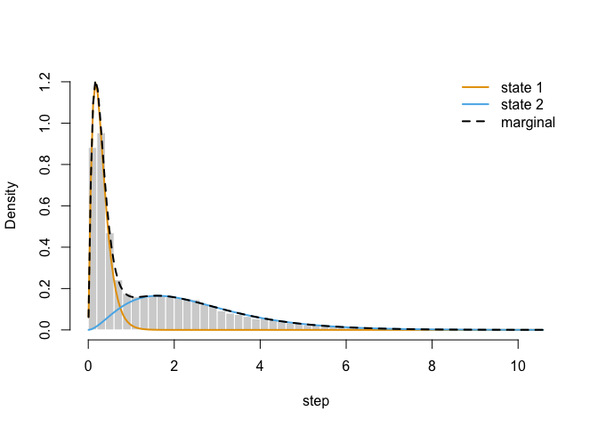

A variety of latent Markov models, including hidden Markov models (HMMs), hidden semi-Markov models (HSMMs), state-space models (SSMs) and continuous-time variants can be formulated and fitted within the same framework by directly maximising the likelihood function calculated using the so-called forward algorithm. Applied researchers often need custom models that standard software does not easily support. Writing tailored R code offers flexibility but suffers from slow estimation speeds. LaMa solves these issues by providing easy-to-use building-blocks for common tasks, which can be combined into custom models in a Lego-type approach, offering very fast estimation speeds. Models are fitted using automatic differentiation via the RTMB package, which makes estimation fast and accurate and allows for rich random effects structures.
Installation
You can install the released package version from CRAN with:
install.packages("LaMa")or the development version from Github:
remotes::install_github("janolefi/LaMa")Package documentation
To aid in building fully custom likelihood functions, this package contains several vignettes that demonstrate how to simulate data from and estimate a wide range of models using the functions included in this package.
HMMs, from simple to complex:
Other latent Markov model classes:
Introductory example: Homogeneous HMM
We analyse the trex data set contained in the package. It contains hourly step lengths of a Tyrannosaurus rex, living 66 million years ago. To these data, we fit a simple 2-state HMM with state-dependent gamma distributions for the step lengths.
library(LaMa)
head(trex, 3)
#> tod step angle state
#> 1 9 0.3252437 NA 1
#> 2 10 0.2458265 2.234562 1
#> 3 11 0.2173252 -2.262418 1We start by defining the negative log-likelihood function. This is made really convenient by the functions tpm() which computes the transition probability matrix via the multinomial logit link, statedens() which computes the state-dependent densities of all observations, and forward() which calculates the log-likelihood via the forward algorithm, here with the stationary distribution as initial distribution.
nll = function(par) {
getAll(par, dat) # makes parameters and data available by name
Gamma = tpm(eta) # transition probability matrix
mu = exp(log_mu); REPORT(mu) # state-dependent means
sigma = exp(log_sigma); REPORT(sigma) # state-dependent sds
allprobs = statedens(step, dgamma2, mu, sigma)
-forward("stationary", Gamma, allprobs)
}To fit the model, we define initial parameters and the data, build the automatically differentiable objective function with MakeADFun() and minimise it with nlminb():
par = list(eta = rep(-2, 2), # initial tpm params (logit-scale)
log_mu = log(c(0.3, 2.5)), # initial means for step length (log-transformed)
log_sigma = log(c(0.2, 1.5))) # initial sds for step length (log-transformed)
dat = list(step = trex$step)
obj = MakeADFun(nll, par, silent = TRUE)
system.time(
opt <- nlminb(obj$par, obj$fn, obj$gr)
)
#> user system elapsed
#> 0.124 0.006 0.147Really fast for 10.000 data points!
lama() turns the fitted object into a model object, which gives a summary, state decoding, plots, residuals and simulation:
mod = lama(obj)
summary(mod)
#> Latent Markov model with 2 states (discrete time, homogeneous)
#> 9999 observations (1 missing), 6 parameters
#>
#> Transition probability matrix:
#> S1 S2
#> S1 0.8270 0.1730
#> S2 0.1608 0.8392
#>
#> Stationary distribution:
#> S1 S2
#> 0.4817 0.5183
#>
#> Mean dwell times:
#> S1 S2
#> 5.779 6.217
#>
#> Reported quantities:
#> S1 S2
#> mu 0.3035 2.506
#> sigma 0.2015 1.491
#>
#> Log-likelihood: -10847.12 AIC: 21706.25 BIC: 21749.51
#> Maximum gradient component: 0.00335
states = viterbi(mod) # most probable state sequence
plot(mod, type = "statedens") # estimated state-dependent distributions